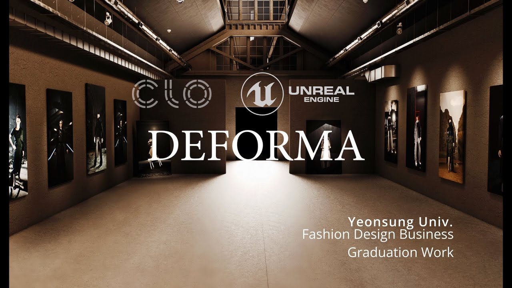

Unreal Level Sequence로 런웨이 장면 만들기 — 복습 ②
2026.08.30
LiveSync로 가져온 CLO 아바타와 의상을 Level Sequence에 넣고, 모션 재생, Cine Camera와 Camera Cuts 구성, Movie Render Queue 출력까지 크게 복습합니다.
이 저널은 LiveSync로 저장한 CLO 아바타와 가먼트 Geometry Cache를 Unreal의 Level Sequence에서 재생하고 촬영하는 기본 흐름을 복습합니다. 목표는 복잡한 편집이 아니라 한 개의 모션, 한두 개의 카메라와 한 번의 렌더를 끝까지 완성하는 것입니다. 시작하기 전에 ① LiveSync Update가 정상이고 ② Content Browser에 아바타 Geometry Cache와 가먼트 Geometry Cache가 각각 저장되어 있어야 합니다. Level Sequence는 LiveSync가 완성해 주는 것으로 전제하지 않고 학생이 직접 새로 만듭니다.
이번 복습에서 완성할 결과
□ Level Sequence Asset을 직접 만들고 열 수 있습니다. □ LiveSync로 가져온 아바타 Geometry Cache와 가먼트 Geometry Cache를 찾을 수 있습니다. □ 두 Cache를 각각 Geometry Cache Track에 추가할 수 있습니다. □ 아바타와 가먼트 Cache가 같은 시작 프레임과 FPS로 움직입니다. □ Cine Camera Actor와 Camera Cuts Track을 만들 수 있습니다. □ Sequencer Play와 Scrub으로 런웨이 장면을 확인할 수 있습니다. □ Movie Render Queue로 이미지 시퀀스를 출력할 수 있습니다.
Level Sequence와 Sequencer는 무엇일까?
Level Sequence는 카메라, 캐릭터, 의상, 조명과 애니메이션 Track을 저장하는 Asset입니다. Sequencer는 Level Sequence를 편집하는 타임라인 화면입니다. Content Browser에 있는 Level Sequence Asset은 편집 데이터를 저장하고, Level 안의 Level Sequence Actor는 그 Asset을 현재 장면과 연결합니다. 학생 작업에서는 먼저 Content Browser에 Sequence Asset을 만들고 더블클릭해 Sequencer를 여는 흐름만 기억하면 됩니다.
1. 런웨이용 Level Sequence 만들기
1. Content Browser의 학생 작업 폴더 안에 Cinematics 폴더를 만듭니다. 2. 폴더 안의 빈 공간에서 우클릭 → Cinematics → Level Sequence를 선택합니다. 3. 이름을 LS_이름_Runway_Main으로 지정합니다. 4. Level Sequence를 더블클릭해 Sequencer를 엽니다. 5. Playback Range를 수업 분량에 맞게 설정합니다. 처음 복습은 30fps 기준 0–300프레임, 약 10초 정도면 충분합니다. 수업 템플릿 FPS가 따로 있으면 그 값을 우선합니다. 6. CLO Animation Editor와 Sequencer의 FPS가 같은지 확인합니다. 7. Unreal의 현재 Level과 Level Sequence를 모두 저장합니다.
2. LiveSync로 저장된 Cache Asset을 확인합니다
Content Browser에서 LiveSync Save 폴더를 열고 아바타와 가먼트의 Geometry Cache Asset을 각각 찾습니다. 이름이 비슷하므로 Thumbnail만 보지 말고 Asset Type을 확인합니다. 아바타 Cache에는 CLO 아바타의 표면 움직임이, 가먼트 Cache에는 시뮬레이션된 의상 움직임이 들어 있습니다. 두 Asset은 하나의 완성된 Sequence가 아니라 별도의 재생 데이터입니다. 수업에서는 새 Level Sequence를 직접 만든 뒤 아바타와 가먼트 Cache를 각각 Level에 배치하고 Geometry Cache Track으로 추가합니다. 문제가 생기면 먼저 각 Cache Asset 자체가 정상인지 확인한 다음 Track 시작 프레임과 FPS를 확인합니다.
3. 아바타와 가먼트 Cache를 Level에 배치하기
1. LiveSync 저장 폴더에서 아바타 Geometry Cache와 가먼트 Geometry Cache를 찾습니다. 2. Content Browser에서 아바타 Cache를 Level Viewport로 드래그합니다. 3. 가먼트 Cache도 Level Viewport로 드래그합니다. 4. 아바타와 가먼트가 같은 원점, 회전과 스케일을 사용하는지 확인합니다. LiveSync에서 함께 나온 두 Cache는 임의로 따로 이동하지 않습니다. 5. Outliner에서 두 Actor의 이름을 GC_Avatar와 GC_Garment처럼 구분하기 쉽게 바꿉니다. 6. 카메라를 만들기 전에 시작 프레임의 정면, 측면과 후면을 확인합니다. 7. Level과 두 Actor의 배치를 저장합니다. 정지 포즈를 촬영할 때도 수업 파이프라인을 통일하려면 해당 포즈가 들어 있는 Cache의 원하는 프레임을 사용합니다. 형태나 위치를 수정해야 한다면 Unreal에서 Cache를 변형하려 하지 말고 CLO 원본을 고쳐 다시 전송합니다.
4. 아바타 Geometry Cache를 Level Sequence에 추가하기
1. Level에 배치한 GC_Avatar Actor를 선택합니다. 2. Sequencer의 + Track → Actor to Sequencer에서 GC_Avatar를 추가합니다. 3. 추가된 Actor Track의 + Track에서 Geometry Cache Track을 선택합니다. 4. LiveSync로 저장한 아바타 Geometry Cache Asset을 지정합니다. 5. Geometry Cache Section의 왼쪽 끝을 시작 프레임 0에 맞춥니다. 6. Playhead를 앞뒤로 Scrub해 아바타 표면과 모션이 정상적으로 움직이는지 확인합니다. 7. Section 길이가 Playback Range와 맞는지 확인합니다. Joint Animation은 Skeletal Mesh와 Animation Sequence 방식으로 들어올 수 있지만 이번 수업의 기본 절차에서는 사용하지 않습니다. 해당 방식의 루트 위치, 포즈와 가먼트 동기화는 테스트 프로젝트가 준비된 뒤 별도로 검증합니다.
5. 의상 Geometry Cache를 같은 시간에 재생하기
1. Level에 배치한 GC_Garment Actor를 선택합니다. 2. Sequencer의 + Track → Actor to Sequencer로 GC_Garment를 추가합니다. 3. 가먼트 Actor의 + Track에서 Geometry Cache Track을 추가합니다. 4. LiveSync로 저장한 가먼트 Geometry Cache Asset을 지정합니다. 5. 가먼트 Geometry Cache Section의 시작 프레임을 아바타 Geometry Cache Section과 같은 프레임에 맞춥니다. 6. Playhead를 앞뒤로 움직여 아바타와 가먼트가 같은 동작을 따라가는지 확인합니다. 7. 한쪽만 늦게 시작하면 두 Section의 Start Offset과 시작 위치를 확인합니다. 8. 재생 속도가 다르면 CLO, LiveSync와 Sequencer의 FPS를 먼저 확인한 뒤 Play Rate를 수정합니다. 아바타 Cache와 가먼트 Cache는 별도의 Asset이지만 한 쌍으로 움직여야 합니다. 둘 중 하나만 교체하거나 Transform을 따로 움직이면 관통과 위치 이탈이 발생할 수 있습니다.
6. Cine Camera와 Camera Cuts 만들기
1. Sequencer 상단의 Create Camera 버튼을 누릅니다. 2. Cine Camera Actor, Camera Track과 Camera Cuts Track이 자동으로 만들어지는지 확인합니다. 3. Camera Cuts Track의 카메라 아이콘을 켜 Viewport를 현재 카메라에 고정합니다. 4. Playhead를 시작 프레임에 둡니다. 5. 카메라를 Pilot 상태로 움직여 아바타 전신과 런웨이 공간이 함께 보이는 구도를 만듭니다. 6. 첫 복습에서는 35–50mm 정도의 Focal Length에서 시작하고, 발이 잘리거나 왜곡이 심하면 카메라 거리와 초점거리를 함께 조정합니다. 7. Camera Transform에 시작 Key를 추가합니다. 8. 카메라를 움직이지 않을 경우에도 시작 Key를 남겨 구도가 바뀌지 않도록 합니다.
7. 간단한 카메라 이동과 두 번째 카메라
한 개 카메라를 움직이려면 시작 프레임에 Transform Key를 만든 뒤 Playhead를 뒤로 이동하고 카메라 위치를 바꿔 두 번째 Key를 추가합니다. 타임라인을 Scrub해 이동 속도를 확인합니다. 처음에는 빠른 회전보다 천천히 전진하거나 옆으로 이동하는 단순한 동작을 사용합니다. 두 번째 카메라가 필요하면 원하는 프레임에서 Create Camera를 다시 누릅니다. Camera Cuts Track의 + Camera에서 새 카메라를 선택해 해당 프레임부터 새 Cut을 만듭니다. Camera Cut Section의 경계를 드래그해 전환 시점을 조절합니다. 런웨이 기본 구성은 전신을 보여주는 Wide Shot과 소재·디테일을 보여주는 Medium 또는 Close Shot 두 개면 충분합니다. 카메라를 많이 만들기 전에 각 카메라가 무엇을 보여주는지 먼저 정합니다.
8. 모션과 카메라를 함께 재생합니다
1. Playback Range의 시작으로 이동합니다. 2. Camera Cuts Track의 Lock Viewport를 켭니다. 3. Sequencer의 Play 버튼 또는 Space를 눌러 재생합니다. 4. 아바타 Geometry Cache, 가먼트 Geometry Cache와 카메라 Cut이 같은 시간에 작동하는지 확인합니다. 5. 발이 바닥에서 미끄러지는지, 가먼트가 아바타와 어긋나는지, 카메라가 모델을 놓치는지 확인합니다. 6. 문제가 있는 프레임에서 멈추고 Playhead 위치를 기록합니다. 7. 처음부터 끝까지 한 번 정상 재생되면 Level, Level Sequence와 관련 Asset을 Save All 합니다. Viewport가 느리다고 바로 Cache가 잘못된 것은 아닙니다. Scrub으로 두 Geometry Cache의 프레임 위치가 맞는지 먼저 확인하고, 최종 속도와 화질은 Movie Render Queue 결과로 판단합니다.
9. Movie Render Queue로 출력하기
1. Edit → Plugins에서 Movie Render Queue가 활성화되어 있는지 확인합니다. 처음 켰다면 Unreal을 다시 시작합니다. 2. Sequencer 상단 Render 버튼의 옵션이 Movie Render Queue인지 확인합니다. 또는 Window → Cinematics → Movie Render Queue를 엽니다. 3. + Render를 눌러 LS_이름_Runway_Main을 Queue에 추가합니다. 4. Unsaved Config를 열고 Output을 추가합니다. 5. Output Directory를 학생 작업 폴더 안의 Render/Runway_v01로 지정합니다. 6. 처음 복습은 1920×1080, Sequence와 같은 Frame Rate로 설정합니다. 7. 출력 형식은 PNG Image Sequence를 권장합니다. 중간 프레임이 실패해도 다시 이어서 출력하기 쉽고 편집 프로그램에서 영상으로 만들 수 있습니다. 8. Start/End Frame이 Sequencer Playback Range와 맞는지 확인합니다. 9. Render Local을 누르고 출력이 끝날 때까지 프로젝트를 조작하지 않습니다. 10. 출력 폴더에서 첫 프레임, 중간 프레임과 마지막 프레임을 열어 카메라, 의상과 조명을 확인합니다.
렌더 전에 꼭 확인할 다섯 가지
1. Camera Cuts Track에 빈 구간이 없는가? 빈 구간은 예상하지 않은 Viewport 또는 검은 화면의 원인이 됩니다. 2. Movie Render Queue에 올린 Sequence가 지금 편집한 Sequence와 같은가? 3. 아바타와 가먼트 Geometry Cache Section의 시작 프레임이 같은가? 4. 두 Geometry Cache의 FPS와 Play Rate가 맞는가? 5. Level과 모든 Asset을 저장했는가? 6. Output Directory가 이전 학생 또는 이전 버전 폴더가 아닌가? 출력 폴더는 Runway_v01, Runway_v02처럼 버전을 올립니다. 같은 폴더를 덮어쓰면 어떤 설정으로 만든 결과인지 비교하기 어렵습니다.
자주 생기는 문제
아바타가 움직이지 않으면 아바타 Actor 아래에 Geometry Cache Track과 Avatar Cache Section이 있는지 확인합니다. 가먼트만 멈춰 있으면 가먼트 Actor 아래에 Geometry Cache Track과 Garment Cache Section이 있는지 확인합니다. 아바타와 가먼트가 어긋나면 두 Section의 시작 프레임, Start Offset, Play Rate와 FPS를 확인합니다. 두 Actor의 Transform도 같은 기준인지 확인합니다. 카메라가 재생되지 않으면 Camera Cuts Track에 현재 카메라가 연결됐는지, Lock Viewport가 켜졌는지 확인합니다. 렌더가 검게 나오면 Camera Cuts의 빈 구간, 숨김 상태, 현재 Level과 MRQ에 올린 Sequence를 확인합니다. 첫 프레임의 의상이나 효과가 불안정하면 시작 전에 준비 프레임 또는 Warm Up이 필요한지 확인합니다. Asset 이름이나 저장 폴더를 변경한 뒤 Track이 빨간색이 되면 Missing Binding입니다. 임의로 복제하기 전에 원래 Cache Asset 위치와 Sequence Binding을 확인합니다.
최종 체크리스트
□ LS_이름_Runway_Main을 직접 만들고 저장했습니다. □ LiveSync 폴더에서 아바타 Geometry Cache와 가먼트 Geometry Cache를 확인했습니다. □ 두 Cache Actor를 같은 원점과 Transform에 배치했습니다. □ 아바타와 가먼트에 각각 Geometry Cache Track을 추가했습니다. □ 두 Geometry Cache Section이 같은 프레임에서 시작합니다. □ Cine Camera와 Camera Cuts Track이 있습니다. □ Wide Shot과 디테일 Shot의 목적이 구분됩니다. □ 처음부터 끝까지 두 Cache와 카메라를 재생해 확인했습니다. □ Movie Render Queue의 Sequence와 Output Directory를 확인했습니다. □ PNG Image Sequence가 정상 출력됐습니다. □ 첫·중간·마지막 프레임을 열어 확인했습니다.